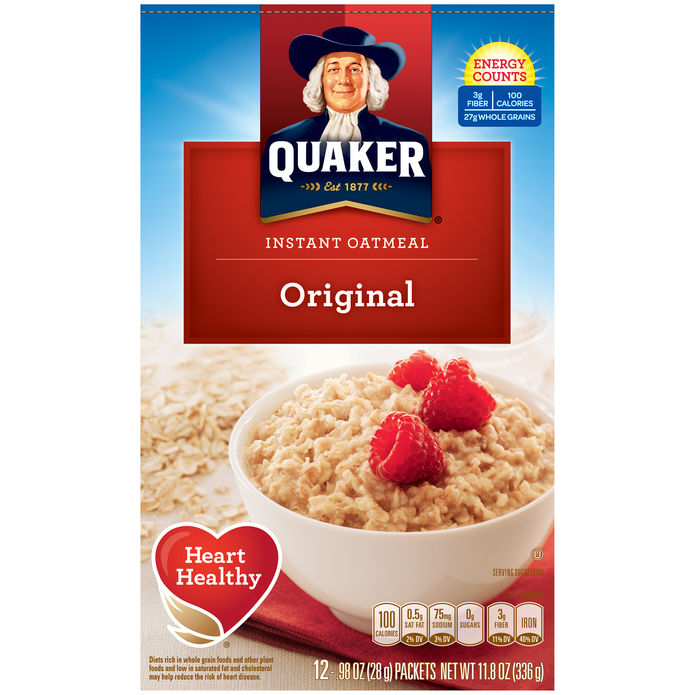

Oatmeal

Like cereal, oatmeal is also a classic and original breakfast that people eat every day. The thing about it is, it is sweet and steaming hot which will make you feel good of course. I personally love it.
Ingredients
Steps
- Open the packet and dump it into the bowl
- Fill water up to the thick line in the empty packet
- Pour that water into the bowl
- Put the bowl into the microwave for 1 and a half to 2 minutes
Return to Main Page